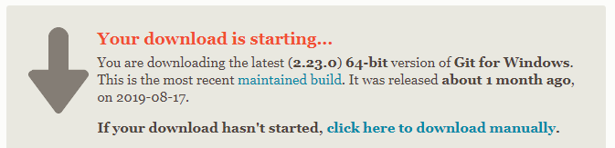
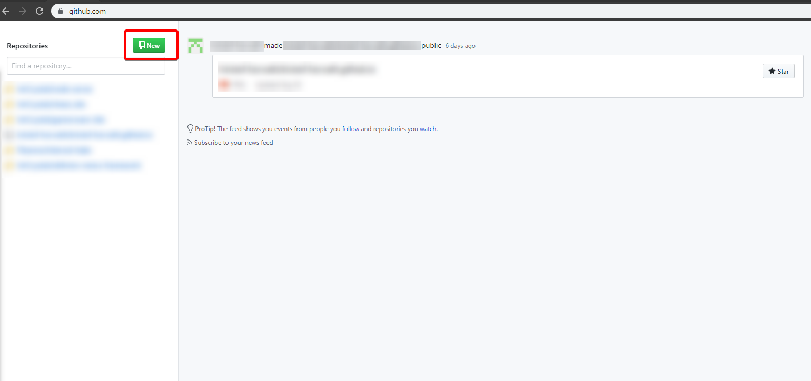
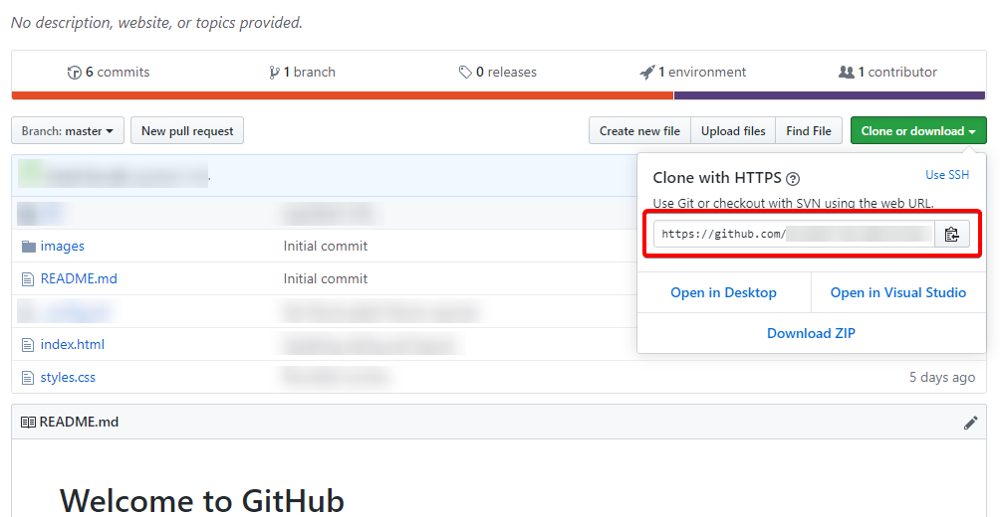
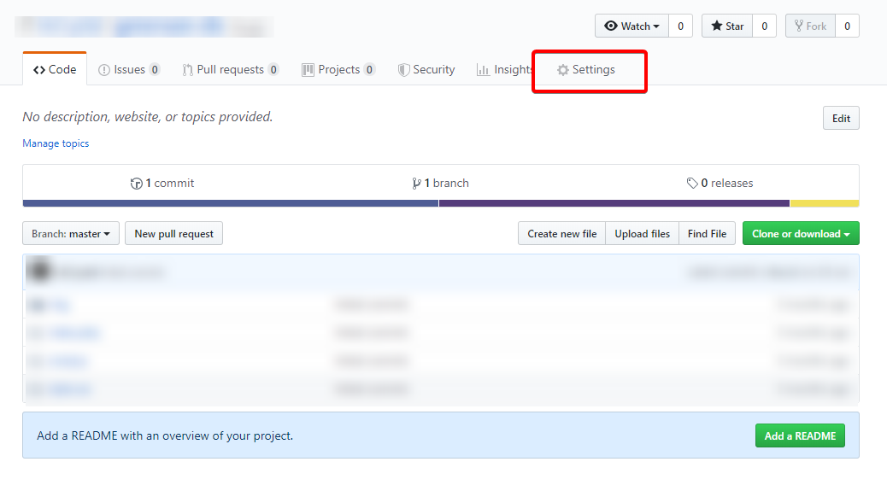

I denne opplæringen av GitHub bruker jeg Windows Powershell. Du kan også bruke Git for Windows med de samme kommandoene!
Du kan laste Git for Windows ved å klikke her
Her vil nedlastingen starte automatisk. Følg installasjonsveiviseren sine instruksjoner.
Lag en mappe på datamskinen hvor du vil at nettstedet ditt skal oppbevares. Jeg kaller mapper min
"repo"
som er kort for repository.
Hold inne "Shift"-knappen og høyreklikk på mappen du har laget, jeg klikker på mappen som heter
"repo".
Der vil du se en liste alternativer, du skal klikke på "Åpne Powershell-vinduet her".
Min datamaskin er konfigurert på engelsk, og derfor står det for meg, "Open Powershell Window here".
Nå vil du se Powershell-vinduet som ser slik ut:
(NB! Sjekk at Powershell-vinduet har riktig direktorat. For meg: "D:\Google Drive\VG3\IT1\repo>")
Skriv kommandoen: git init
Da vil du se at det står "Initialized empty Git repository in D:/Google Drive/VG3/IT1/repo/.git/".
Gratulerer, du har laget ditt første lokale repository.
Lag en GitHub bruker ved å klikke her
Fyll inn informasjonsboksene, og bekreft eposten!
NB! Det kan være lurt å skru på tofaktorverifisering for å sikre kontoen og repositoriene dine.
Klikk på den grønne knappen hvor det står "new", oppe i det venstre panelet.
Fyll deretter inn "Repository name", her kan du kalle repositoriet det du vil.
Trykk deretter "Create
repository".
På siden til repositoriet ditt, finn den grønne "Clone or download" knappen, klikk på den, deretter kopier lenken.
Finn Powershell-vinduet ditt, deretter skriv kommandoen: git remote add origin https://github.com/brukernavn/nettsiden-min.git Husk å bytte ut URL-en med din egen!.
Skriv kommandoen: git pull origin master
Nå har du lastet ned alle filene fra repositoriet ditt.
Nå
kan du se nettsiden din lokalt ved å åpne html-filer.
Bruk en teksteditor, feks Visual Studio Code, å
modifiser filene.
Skriv kommandoenne i rekkefølge:
git add
git status
git commit -m "Min første commit melding!"
git push origin master
Nå kan du sjekke GitHub repositoriet ditt, der bør det nå stå at du nettopp oppdaterte filene!
På siden til repositoriet ditt, klikk "Settings".
Endre navnet på repositoriet ditt til
"brukernavn.github.io" hvor du bytter ut brukernavn med brukernavnet ditt.
Pass på at repositoriet er offentlig. Nå bør GitHub pages fungere!
Gratulerer du har nå klart å sette opp din egne GitHub pages side! Sjekk ved å gå til "brukernavn.github.io", husk å bytte ut brukernavn med ditt eget brukernavn.